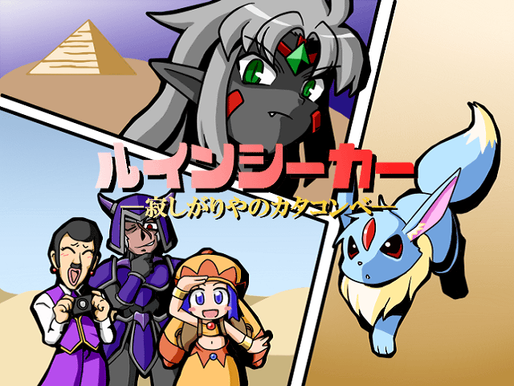

| << Back | トップページ | Next >> |
| No.47 - ★ルインシーカー -寂しがりやのカタコンベ- |

| 本体ダウンロード(5.73MB) / BBS / 投票 / 遅刻提出済 | |
| 作者：ツノザメ怪人 | 使用ツール：2000 |
| ジャンル：見るゲとやるゲが両方そなわり最強に見える | 配信/投稿：私は一向に構わんッ！/同じく |
| 作者コメント： あらすじ 砂漠で遭難していたカーバンクルは、ひょんな事から ピラミッドの調査に来ていたラナに出会う。 彼女は罠を解除する為に、カーバンクルを雇いたいと言って来た。 ナイ軍の借金を少しでも無くす為に、カーバンクルは 商人のラナ、カメラマンのキャメラン、護衛のダーブラと共に ピラミッドの探索へと向かうが……？ ゲーム説明 ピラミッドに仕掛けられた罠を解除して行きながら、 自動で進行していくイベントを見るタイプのゲームです。 ピラミッドには一定の日数しか留まる事は出来ず、 歩数の増加や罠の解除失敗等の条件で時間が減って行きます。 制限時間内にピラミッドの奥地まで辿り着き、 この地に隠された真実を明らかにして下さい。 ※ＱＴＥ的な要素は無いので、ゆっくりイベントを見ていってね！ | |
| 管理人コメント： QTE失敗したら即がめおべらでやりなおしでまたムービー見せられるとかマジでやめろよな！！ ともかくかわいい期待。 | |
| 更新履歴： 2014/1/10 パッチ追加 2014/1/7 本体修正 2014/1/3 パッチ追加 2014/1/1 遅刻提出 コメント変更 2013/12/9 登録 | |